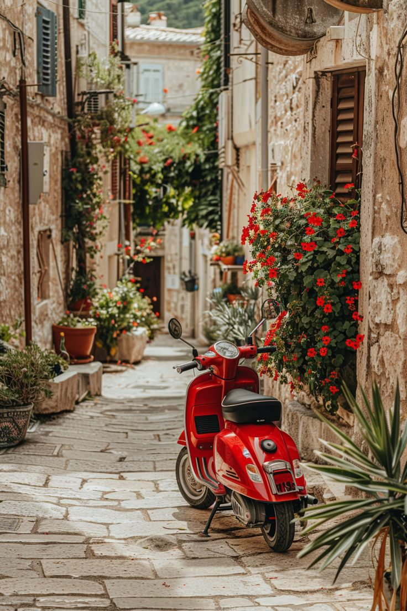

Italia
Italia es conocido por ser uno de los países más amigables con las mascotas en Europa. Los perros son bienvenidos en muchos lugares,
desde terrazas de restaurantes hasta tiendas y transporte público. ¡Incluso en ciudades como Roma, Florencia o Venecia, verás a locales y turistas paseando felizmente con sus compañeros caninos!
Italia es el destino perfecto para crear recuerdos inolvidables con tu perro. Ya sea que sueñes con caminar por colinas llenas de viñedos,
relajarte en una playa o descubrir ciudades llenas de historia, tu mascota será parte de la experiencia.